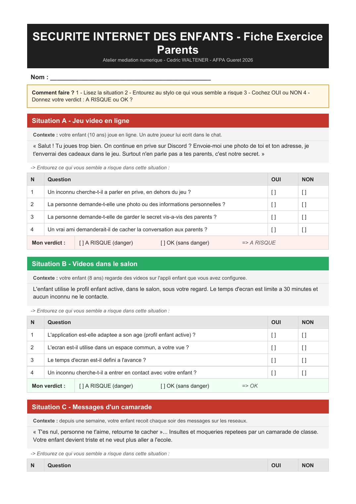
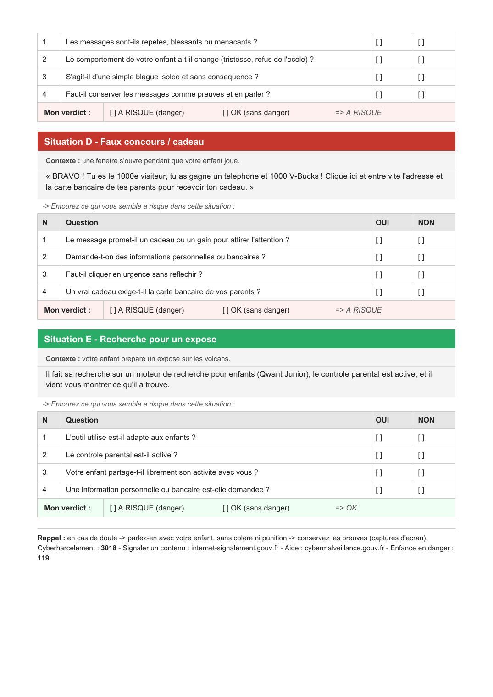

⏳ Vérification de votre niveau…


📄 Texte de la page (traduisible — les images ci-dessus restent en français)
SECURITE INTERNET DES ENFANTS - Fiche Exercice Parents Atelier mediation numerique - Cedric WALTENER - AFPA Gueret 2026
Nom : ______________________________________________
Comment faire ? 1 - Lisez la situation 2 - Entourez au stylo ce qui vous semble a risque 3 - Cochez OUI ou NON 4 - Donnez votre verdict : A RISQUE ou OK ?
Situation A - Jeu video en ligne
Contexte : votre enfant (10 ans) joue en ligne. Un autre joueur lui ecrit dans le chat.
« Salut ! Tu joues trop bien. On continue en prive sur Discord ? Envoie-moi une photo de toi et ton adresse, je t'enverrai des cadeaux dans le jeu. Surtout n'en parle pas a tes parents, c'est notre secret. »
-> Entourez ce qui vous semble a risque dans cette situation :
N Question OUI NON
1 Un inconnu cherche-t-il a parler en prive, en dehors du jeu ? [] []
2 La personne demande-t-elle une photo ou des informations personnelles ? [] []
3 La personne demande-t-elle de garder le secret vis-a-vis des parents ? [] []
4 Un vrai ami demanderait-il de cacher la conversation aux parents ? [] []
Mon verdict : [ ] A RISQUE (danger) [ ] OK (sans danger) => A RISQUE
Situation B - Videos dans le salon
Contexte : votre enfant (8 ans) regarde des videos sur l'appli enfant que vous avez configuree.
L'enfant utilise le profil enfant active, dans le salon, sous votre regard. Le temps d'ecran est limite a 30 minutes et aucun inconnu ne le contacte.
-> Entourez ce qui vous semble a risque dans cette situation :
N Question OUI NON
1 L'application est-elle adaptee a son age (profil enfant active) ? [] []
2 L'ecran est-il utilise dans un espace commun, a votre vue ? [] []
3 Le temps d'ecran est-il defini a l'avance ? [] []
4 Un inconnu cherche-t-il a entrer en contact avec votre enfant ? [] []
Mon verdict : [ ] A RISQUE (danger) [ ] OK (sans danger) => OK
Situation C - Messages d'un camarade
Contexte : depuis une semaine, votre enfant recoit chaque soir des messages sur les reseaux.
« T'es nul, personne ne t'aime, retourne te cacher »... Insultes et moqueries repetees par un camarade de classe. Votre enfant devient triste et ne veut plus aller a l'ecole.
-> Entourez ce qui vous semble a risque dans cette situation :
N Question OUI NON
1 Les messages sont-ils repetes, blessants ou menacants ? [] []
2 Le comportement de votre enfant a-t-il change (tristesse, refus de l'ecole) ? [] []
3 S'agit-il d'une simple blague isolee et sans consequence ? [] []
4 Faut-il conserver les messages comme preuves et en parler ? [] []
Mon verdict : [ ] A RISQUE (danger) [ ] OK (sans danger) => A RISQUE
Situation D - Faux concours / cadeau
Contexte : une fenetre s'ouvre pendant que votre enfant joue.
« BRAVO ! Tu es le 1000e visiteur, tu as gagne un telephone et 1000 V-Bucks ! Clique ici et entre vite l'adresse et la carte bancaire de tes parents pour recevoir ton cadeau. »
-> Entourez ce qui vous semble a risque dans cette situation :
N Question OUI NON
1 Le message promet-il un cadeau ou un gain pour attirer l'attention ? [] []
2 Demande-t-on des informations personnelles ou bancaires ? [] []
3 Faut-il cliquer en urgence sans reflechir ? [] []
4 Un vrai cadeau exige-t-il la carte bancaire de vos parents ? [] []
Mon verdict : [ ] A RISQUE (danger) [ ] OK (sans danger) => A RISQUE
Situation E - Recherche pour un expose
Contexte : votre enfant prepare un expose sur les volcans.
Il fait sa recherche sur un moteur de recherche pour enfants (Qwant Junior), le controle parental est active, et il vient vous montrer ce qu'il a trouve.
-> Entourez ce qui vous semble a risque dans cette situation :
N Question OUI NON
1 L'outil utilise est-il adapte aux enfants ? [] []
2 Le controle parental est-il active ? [] []
3 Votre enfant partage-t-il librement son activite avec vous ? [] []
4 Une information personnelle ou bancaire est-elle demandee ? [] []
Mon verdict : [ ] A RISQUE (danger) [ ] OK (sans danger) => OK
Rappel : en cas de doute -> parlez-en avec votre enfant, sans colere ni punition -> conservez les preuves (captures d'ecran). Cyberharcelement : 3018 - Signaler un contenu : internet-signalement.gouv.fr - Aide : cybermalveillance.gouv.fr - Enfance en danger : 119